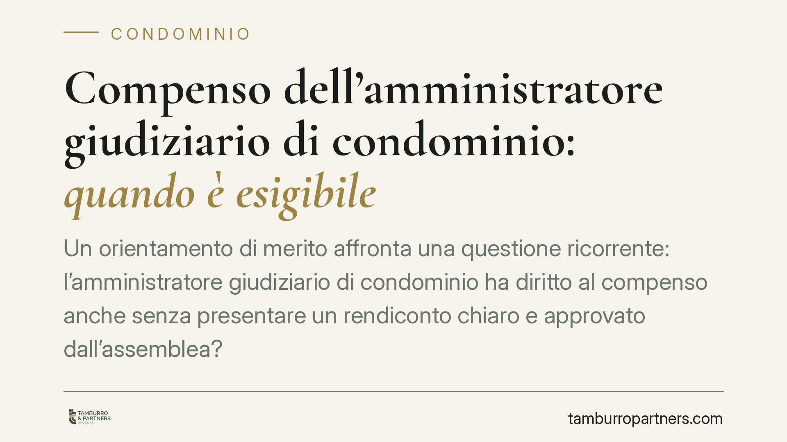

Compenso dell'amministratore giudiziario di condominio: quando è esigibile
Un orientamento di merito affronta una questione ricorrente: l'amministratore giudiziario di condominio ha diritto al compenso anche senza presentare un rendiconto chiaro e approvato dall'assemblea? La distinzione tra esistenza del diritto ed esigibilità del credito è il punto decisivo. Vediamo cosa cambia per condomini e professionisti incaricati.

Il caso: compenso dell'amministratore giudiziario senza rendiconto
La questione è pratica e frequente. Un amministratore nominato dall'autorità giudiziaria chiede il pagamento del proprio compenso. I condomini eccepiscono che non ha mai presentato un rendiconto comprensibile della gestione. Il professionista obietta che il suo diritto al compenso nasce dall'incarico, a prescindere dalla rendicontazione.
Un orientamento di merito ha affrontato il nodo valorizzando la natura dell'incarico: l'amministratore giudiziario, pur nominato dal giudice, agisce come mandatario dei condomini. Da questa qualificazione discende una conseguenza precisa sul momento in cui il compenso può essere preteso.
Inquadramento normativo: nomina giudiziaria e obblighi del mandatario
La nomina giudiziaria dell'amministratore di condominio trova il suo fondamento nell'art. 1129 c.c., che disciplina nomina e revoca da parte dell'autorità giudiziaria quando l'assemblea non vi provvede o quando ricorrono gravi irregolarità. È questa la norma di riferimento per la figura, non l'art. 1105 c.c., che riguarda la gestione della comunione in senso ampio e l'intervento del giudice in caso di mancata deliberazione.
Una volta inquadrato l'amministratore giudiziario come mandatario, entra in gioco l'art. 1713 c.c.: il mandatario deve rendere al mandante il conto del proprio operato e rimettergli tutto ciò che ha ricevuto in ragione dell'incarico. Il rendiconto non è un adempimento formale: è un obbligo sostanziale che precede la liquidazione del compenso. A ciò si aggiunge l'art. 2697 c.c. sull'onere della prova: chi vanta un credito deve dimostrarne i presupposti, incluso l'adempimento degli obblighi cui il credito è funzionalmente collegato.
Compenso dell'amministratore giudiziario: diritto esiste, ma quando è esigibile?
Qui sta il cuore del ragionamento. Il diritto al compenso esiste: nasce dall'incarico conferito. Ma esistenza del diritto ed esigibilità del credito sono due cose diverse.
Secondo la lettura in esame, finché il mandatario non rende un conto chiaro della gestione, il credito non diventa esigibile. In altre parole: il diritto c'è, ma non si può pretendere il pagamento fino a quando l'assemblea non è messa in condizione di valutare l'operato attraverso un rendiconto comprensibile e di approvarlo.
Va segnalato un profilo interpretativo. L'applicazione all'amministratore giudiziario dello schema di rendiconto previsto dall'art. 1130-bis c.c. (rendiconto condominiale ordinario) è una lettura sistematica, non un obbligo codificato in modo specifico per questa figura. Resta però un parametro utile per misurare la "chiarezza" richiesta.
Cosa significa rendiconto intelligibile
Un rendiconto esigibile non è un semplice elenco di numeri. Deve consentire al condomino medio di capire dove sono finiti i soldi. In concreto, dovrebbe:
- indicare con chiarezza entrate e uscite, voce per voce;
- distinguere le spese ordinarie da quelle straordinarie;
- riportare la situazione di cassa e i saldi dei singoli condomini;
- allegare o rendere consultabili i giustificativi di spesa;
- usare un linguaggio e una struttura comprensibili a chi non è un tecnico.
Se il documento è oscuro, disordinato o privo di riscontri, l'assemblea non può approvarlo consapevolmente e il compenso resta, su questa linea, non esigibile.
Implicazioni pratiche
Per il professionista incaricato: non basta aver lavorato. Occorre documentare l'operato in forma leggibile e sottoporlo all'assemblea. La rendicontazione non è un di più, ma il presupposto per pretendere il pagamento.
Per i condomini: l'eccezione di mancato o inadeguato rendiconto può legittimamente paralizzare la richiesta di compenso, purché fondata su un'effettiva opacità della gestione e non su un rifiuto pretestuoso.
Cosa fare in concreto
Se sei l'amministratore giudiziario:
- Predisponi il rendiconto con criteri di chiarezza assimilabili a quelli dell'art. 1130-bis c.c., anche se non obbligatori in senso stretto.
- Conserva e organizza tutti i giustificativi di spesa.
- Convoca l'assemblea per sottoporre il conto all'approvazione prima di agire per il compenso.
Se sei un condomino:
- Richiedi formalmente la consultazione dei documenti contabili.
- Verbalizza in assemblea le ragioni specifiche di non approvazione del rendiconto.
- Valuta con un legale la fondatezza dell'eccezione prima di opporti al pagamento.
Un'avvertenza sul valore della pronuncia
Si tratta di un orientamento di merito. Le pronunce di questo tipo non hanno efficacia vincolante generale: valgono per il caso deciso e orientano, non obbligano, gli altri giudici. Prima di assumere decisioni, consigliamo di valutare la singola situazione con un'analisi dedicata.
---
Contributo informativo a cura di Tamburro & Partners - Avv. Giuseppe Tamburro. Non costituisce parere legale.
Ogni condominio ha una storia a sé.
Se gestisci un'amministrazione e vuoi un confronto su una specifica questione condominiale, scrivi allo studio. Ti rispondiamo entro un giorno lavorativo.